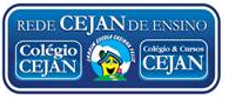
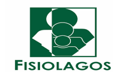
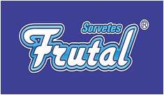
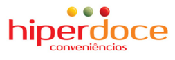
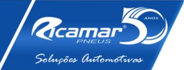

Mais de 30 anos de experiência em saúde ocupacional, perícia judicial, engenharia e gestão empresarial.
Liderada pelo Dr. Jorge Augusto Mendonça Cabral, médico do trabalho pela UFF e Perito Judicial desde 1989.
Exames Realizados
Empresas Satisfeitas
Cidades Atendidas

A Emprehmet foi idealizada e desenvolvida pelo Dr. Jorge Augusto Mendonça Cabral, médico do trabalho pela UFF, ex-Diretor da Sociedade Fluminense de Medicina do Trabalho, especialista em Medicina de Tráfego pela ABRAMET e Perito Judicial desde 1989.
A empresa une experiência técnica, gestão empresarial e excelência operacional para oferecer soluções completas em saúde ocupacional, perícia judicial, segurança do trabalho e gestão corporativa.
Gestão completa da saúde corporativa e exames ocupacionais.
Programas, laudos técnicos, treinamentos e conformidade normativa.
Assistência técnica especializada nas áreas cível e trabalhista.
Mais de três décadas de atuação técnica e pericial.
Soluções alinhadas às exigências legais e normativas.
Atendimento multidisciplinar e especializado.
Relacionamento próximo e suporte eficiente.
Solicite uma análise especializada da Emprehmet.
Soluções completas em medicina ocupacional, segurança do trabalho, perícia e gestão corporativa.
Programa de Controle Médico de Saúde Ocupacional para promoção e preservação da saúde dos trabalhadores.
Emissão de Atestado de Saúde Ocupacional.
Documenta a aptidão do trabalhador para exercer sua função, sendo obrigatório nos exames admissional, demissional, periódico, de retorno ao trabalho e de mudança de função ou de riscos ocupacionais.
Admissional, periódico, retorno ao trabalho, mudança de função e demissional.
Realizamos todos os exames previstos pela NR-07: admissional (antes da contratação), periódico (anual), retorno ao trabalho (após 30+ dias afastado), mudança de função e demissional — garantindo a conformidade legal da empresa.
Programa de Gerenciamento de Riscos ocupacionais.
Programa de Gerenciamento de Riscos – documento responsável por fazer o levantamento de perigos e riscos existentes no ambiente de trabalho (riscos químicos, físicos, biológicos, ergonômicos e mecânicos). Deve conter um inventário de riscos e um plano de ação, com objetivo de mitigar/extinguir a exposição dos trabalhadores aos respectivos riscos.
Laudo Técnico das Condições Ambientais do Trabalho.
Laudo Técnico das Condições Ambientais do Trabalho: laudo elaborado com a finalidade de concluir pela presença ou ausência de atividades especiais, que são as atividades que garantem ao trabalhador a possibilidade de aposentadoria especial (depois de 15, 20 ou 25 anos de exposição). Estas atividades estão listadas no anexo IV do decreto 3.048/99. O LTCAT é a base para preenchimento do PPP e do evento S-2240 do e-Social.
Assistência técnica especializada nas áreas trabalhista e cível.
Emissão de laudos e pareceres técnicos por perito judicial com atuação desde 1989, nas áreas cível e trabalhista, com respaldo acadêmico pela UFF e reconhecimento pelos tribunais da região.
Capacitações e treinamentos em normas regulamentadoras.
Treinamento de cipeiros, orientação eleitoral, manutenção mensal da comissão, apoio técnico em reuniões, palestras de segurança e organização da SIPAT — tudo conforme as exigências da NR-05.
Gestão e envio de eventos de saúde e segurança do trabalho.
A Emprehmet realiza toda a demanda técnica, gerenciando as informações e enviando os eventos de Segurança e Saúde do Trabalho de acordo com os leiautes do e-Social, tudo através do nosso software, que já gerencia programas, laudos, exames e demais dados referentes à segurança e saúde ocupacional.
Elaboração de documentos técnicos e pareceres especializados.
• Laudo Técnico de Insalubridade e/ou Periculosidade (NR-15/NR-16)
• O LTIP – Laudo Técnico de Insalubridade e/ou Periculosidade tem a finalidade de atender às exigências das normas regulamentadoras, visando à caracterização da insalubridade e/ou periculosidade no ambiente de trabalho de sua empresa.
• O Laudo Técnico de Insalubridade e Periculosidade destina-se a demonstrar a empresa, os níveis de exposição das condições ambientais correspondentes às atividades exercidas pelos seus colaboradores, segundo as exigências previstas nas Normas Regulamentadoras nº 15 e 16 (NR-15/NR-16) e seus anexos.
• Através da utilização de metodologia e de diversas técnicas de análise ambiental, e, tendo como base a consulta às legislações trabalhistas pertinentes a medicina, segurança e higiene do trabalho, este estudo, determinará se os ambientes de trabalho da empresa e as funções que trabalham nestes locais trabalham em condições insalubres e/ou perigosas.
Parceiros de diferentes setores que escolheram a excelência em saúde e segurança do trabalho.





Nossa equipe está pronta para atender sua empresa.